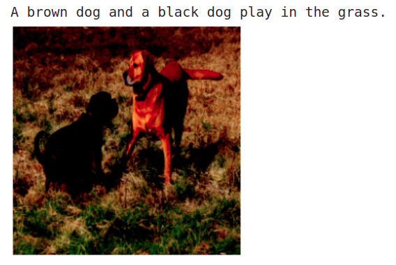

Image captioning¶
This will be bit more interesting than the previous chapters because we will deal with images as well as text. The model we are going to built will be able generate a caption given an image as input,

Dataset¶
We will be using the flickr8k image captioning dataset which contain images as well as 5 captions corresponding to a single image. The raw dataset has an images folder which contain all the images and a captions.txt file which has the captions corresponding to each image in the images folder. Here is a sample from captions.txt:

As you can see, we have the image name, caption number and the caption(each of them separated by ‘|’ symbol). Since each image has more than one caption, the ‘caption_number’ will indicate the number of the caption. From the above captions, we will use the captions with ‘caption_number’ equal to 1.
Preparing the data¶
First let’s write some code to create a dataframe which will contain a column for images and another column for captions, as shown below:

Let’s create an empty dataframe and two lists to store our image paths and captions:
import pandas as pd
from pathlib import Path
# create an empty dataframe with 'imgs' column
df = pd.DataFrame(columns=['imgs'])
# we will store the image files and captions here before putting it into dataframe
imgs, captions = [], []
# directory where the dataset is present
root_dir = Path("../input/flickr8k")
Now let’s read the contents of captions.txt:
# get the contents of 'captions.txt' file
with open(root_dir/"captions.txt", "r") as f:
content = f.readlines()
Finally, we will loop through each line in captions.txt and extract the image path and the caption with ‘caption_number’ equal to 1:
for line in content:
line = line.strip().split("|")
# extract the required informations
img_path = line[0]
caption_number = line[1]
caption = line[-1]
# check if the caption_number is equal to 1
if caption_number=='1':
# store the image path
imgs.append(root_dir/"images"/img_path)
# store the caption
captions.append(caption)
Now, let’s store our image paths and captions on to the dataframe we created:
df.loc[:, 'imgs'] = imgs
df.loc[:, 'captions'] = captions
In our previous chapters, we used encoder-decoder type models to solve text-to-text problems like summarization and translation. Here also we will use encoder-decoder type model, but the problem is that, here, both the inputs and outputs are not text. The input is an image and output is text. So, we cannot use the tokenizer to process both the inputs and outputs.
As we had AutoTokenizer to deal the text data, the transformers library also has something called AutoFeatureExtractor to deal with image data.
The tokenizer we load using AutoTokenizer will process the text and prepare it in a format which can be directly fed to the model. Similarly, the feature extractor loaded using AutoFeatureExtractor will process the image and prepare it in a format which can be directly fed into the vision model.
We will load the feature extractor from vision transformer checkpoint and tokenizer from gpt2 checkpoint:
from transformers import AutoFeatureExtractor, AutoTokenizer
encoder_checkpoint = "google/vit-base-patch16-224-in21k"
decoder_checkpoint = "gpt2"
feature_extractor = AutoFeatureExtractor.from_pretrained(encoder_checkpoint)
tokenizer = AutoTokenizer.from_pretrained(decoder_checkpoint)
For the tokenizer, we will set the maximum length to 128, which means, the tokenizer will truncate captions longer than 128 and add padding to captions shorter than 128. So we need to set a token id for padding, otherwise we will get an error:
tokenizer.pad_token = tokenizer.eos_token
Let’s take an example image and a caption to see the outputs after applying feature_extractor and tokenizer respectively:
from PIL import Image
# maximum length for the captions
max_length = 128
sample = df.iloc[0]
# sample image
image = Image.open(sample['imgs']).convert('RGB')
# sample caption
caption = sample['captions']
# apply feature extractor on the sample image
inputs = feature_extractor(images=image, return_tensors='pt')
# apply tokenizer
outputs = tokenizer(
caption,
max_length=max_length,
truncation=True,
padding='max_length',
return_tensors='pt',
)
On printing inputs and outputs, we get this:
Inputs:
{'pixel_values': tensor([[[[-0.3569, -0.1294, -0.0902, ..., -0.9686, -0.9529, -0.9529],
[-0.3804, -0.1137, -0.0667, ..., -0.9373, -0.9451, -0.9059],
[-0.3961, -0.0824, -0.0510, ..., -0.9373, -0.9451, -0.9216],
...,
[ 0.4588, 0.1765, 0.3412, ..., 0.6627, 0.2941, 0.2941],
[ 0.3804, 0.3882, 0.7255, ..., 0.6471, 0.3176, 0.3176],
[ 0.6235, 0.6392, 0.4667, ..., 0.6078, 0.3098, 0.3255]],
[[-0.3176, 0.0039, 0.0510, ..., -0.9765, -0.9529, -0.9373],
[-0.3412, 0.0118, 0.0824, ..., -0.9294, -0.9216, -0.8353],
[-0.3804, 0.0353, 0.1059, ..., -0.9294, -0.8980, -0.8275],
...,
[-0.1529, -0.3725, -0.0431, ..., 0.7333, 0.4510, 0.4431],
[-0.2471, 0.0118, 0.3255, ..., 0.7098, 0.4431, 0.4431],
[-0.0118, 0.1608, -0.0431, ..., 0.6784, 0.4431, 0.4431]],
[[-0.2392, -0.0196, -0.0039, ..., -0.9765, -0.9686, -0.9608],
[-0.2784, 0.0118, 0.0353, ..., -0.9451, -0.9529, -0.9529],
[-0.2706, 0.0510, 0.0667, ..., -0.9608, -0.9529, -0.9451],
...,
[-0.7569, -0.7804, -0.4902, ..., 0.8353, 0.6471, 0.5922],
[-0.8431, -0.6392, -0.4196, ..., 0.8275, 0.6235, 0.5686],
[-0.6314, -0.4824, -0.4353, ..., 0.8353, 0.6078, 0.5373]]]])}
Outputs:
{'input_ids': tensor([[ 32, 2576, 1016, 656, 257, 13510, 2615, 764, 50256, 50256,
50256, 50256, 50256, 50256, 50256, 50256, 50256, 50256, 50256, 50256,
50256, 50256, 50256, 50256, 50256, 50256, 50256, 50256, 50256, 50256,
50256, 50256, 50256, 50256, 50256, 50256, 50256, 50256, 50256, 50256,
50256, 50256, 50256, 50256, 50256, 50256, 50256, 50256, 50256, 50256,
50256, 50256, 50256, 50256, 50256, 50256, 50256, 50256, 50256, 50256,
50256, 50256, 50256, 50256, 50256, 50256, 50256, 50256, 50256, 50256,
50256, 50256, 50256, 50256, 50256, 50256, 50256, 50256, 50256, 50256,
50256, 50256, 50256, 50256, 50256, 50256, 50256, 50256, 50256, 50256,
50256, 50256, 50256, 50256, 50256, 50256, 50256, 50256, 50256, 50256,
50256, 50256, 50256, 50256, 50256, 50256, 50256, 50256, 50256, 50256,
50256, 50256, 50256, 50256, 50256, 50256, 50256, 50256, 50256, 50256,
50256, 50256, 50256, 50256, 50256, 50256, 50256, 50256]]), 'attention_mask': tensor([[1, 1, 1, 1, 1, 1, 1, 1, 0, 0, 0, 0, 0, 0, 0, 0, 0, 0, 0, 0, 0, 0, 0, 0,
0, 0, 0, 0, 0, 0, 0, 0, 0, 0, 0, 0, 0, 0, 0, 0, 0, 0, 0, 0, 0, 0, 0, 0,
0, 0, 0, 0, 0, 0, 0, 0, 0, 0, 0, 0, 0, 0, 0, 0, 0, 0, 0, 0, 0, 0, 0, 0,
0, 0, 0, 0, 0, 0, 0, 0, 0, 0, 0, 0, 0, 0, 0, 0, 0, 0, 0, 0, 0, 0, 0, 0,
0, 0, 0, 0, 0, 0, 0, 0, 0, 0, 0, 0, 0, 0, 0, 0, 0, 0, 0, 0, 0, 0, 0, 0,
0, 0, 0, 0, 0, 0, 0, 0]])}
As you can see, for the ‘Outputs’, since the caption is smaller than 128, padding token id(50256) is added to make the length equal to 128.
Now, let’s write a normal dataset loading class as we usually do in pytorch. We will pass the dataframe we just created and extract the images and captions. Then for each each image and caption we apply the feature_extractor and tokenizer. Finally, we return the processed inputs and outputs.
from torch.utils.data import Dataset
class LoadDataset(Dataset):
def __init__(self, df):
self.images = df['imgs'].values
self.captions = df['captions'].values
def __getitem__(self, idx):
# everything to return is stored inside this dict
inputs = dict()
# load the image and apply feature_extractor
image_path = str(self.images[idx])
image = Image.open(image_path).convert("RGB")
image = feature_extractor(images=image, return_tensors='pt')
# load the caption and apply tokenizer
caption = self.captions[idx]
labels = tokenizer(
caption,
max_length=max_length,
truncation=True,
padding='max_length',
return_tensors='pt',
)['input_ids'][0]
# store the inputs(pixel_values) and labels(input_ids) in the dict we created
inputs['pixel_values'] = image['pixel_values'].squeeze()
inputs['labels'] = labels
return inputs
def __len__(self):
return len(self.images)
Let’s split our dataframe into training and testing set:
from sklearn.model_selection import train_test_split
train_df, test_df = train_test_split(df, test_size=0.2, shuffle=True, random_state=42)
Now we will load each image and caption of our dataset using the LoadDataset class we just created:
train_ds = LoadDataset(train_df)
test_ds = LoadDataset(test_df)
Training the model¶
Finally, it’s time to load in our model and start the training.
In the previous chapters, we did tasks like named entity recognition and summarization, where we used different classes like AutoModelForTokenClassification and AutoModelForSeq2SeqLM respectively to load in our pretrained model. For this task also, we have a special class called VisionEncoderDecoderModel(you can read more about it here) where we can pass the name of the vision model and the language model we need for the encoder and the decoder respectively.
Loading our encoder-decoder model for this task is simple as this:
from transformers import VisionEncoderDecoderModel
model = VisionEncoderDecoderModel.from_encoder_decoder_pretrained(
encoder_checkpoint,
decoder_checkpoint
)
If you don’t set a value for decoder_start_token_id and pad_token_id in the model config, you will get a similar error like this:
/opt/conda/lib/python3.7/site-packages/transformers/models/vision_encoder_decoder/modeling_vision_encoder_decoder.py in shift_tokens_right(input_ids, pad_token_id, decoder_start_token_id)
40 shifted_input_ids[:, 1:] = input_ids[:, :-1].clone()
41 if decoder_start_token_id is None:
---> 42 raise ValueError("Make sure to set the decoder_start_token_id attribute of the model's configuration.")
43 shifted_input_ids[:, 0] = decoder_start_token_id
44
ValueError: Make sure to set the decoder_start_token_id attribute of the model's configuration.
So, before proceeding any further, let’s set those values:
model.config.decoder_start_token_id = tokenizer.bos_token_id
model.config.pad_token_id = tokenizer.pad_token_id
Inorder to get good and meaningful captions from the model, we should use beam search instead of greedy search while generating the caption. For that, we just have to set a value greater than 1 for num_beams in model config:
# set number of beams for beam search to 4
num_beams = 4
model.config.num_beams = num_beams
Note
If you are not familiar with greedy search and beam search, you could use these resources to learn more:
In short, our model will give more meaningful captions while using beam search than greedy search. Also, increasing the number of beams for beam search will increase the time taken to generate the captions during inference.
And, now it’s time to train the model. We will use the Seq2SeqTrainer from transformers library for this. Before that we need to pass some arguments to control the training of our model, we will do that first:
from transformers import Seq2SeqTrainingArguments
# batch size
bs = 8
training_args = Seq2SeqTrainingArguments(
output_dir="image-caption-generator", # name of the directory to store training outputs
evaluation_strategy="epoch", # evaluate after each epoch
per_device_train_batch_size=bs, # batch size during training
per_device_eval_batch_size=bs, # batch size during evaluation
learning_rate=5e-5,
weight_decay=0.01, # weight decay parameter for AdamW optimizer
num_train_epochs=5, # number of epochs to train
save_strategy='epoch', # save checkpoints after each epoch
report_to='none', # prevent reporting to wandb, mlflow...
)
Now let’s create the trainer and start the training:
from transformers import Seq2SeqTrainer, default_data_collator
trainer = Seq2SeqTrainer(
model=model,
tokenizer=feature_extractor,
data_collator=default_data_collator,
train_dataset=train_ds,
eval_dataset=test_ds,
args=training_args,
)
trainer.train()
Testing the model¶
Now let’s see how good is the captions generated by our model. For the time being, we will use some images from the test set we created earlier:
inputs = test_ds[65]['pixel_values']
Since the feature_extractor is already applied to images in the test set, we don’t need to apply it again. We can directly feed the image pixels to our model:
import torch
model.eval()
with torch.no_grad():
# uncomment the below line if feature extractor is not applied to the image already
# inputs = feature_extractor(images=inputs, return_tensors='pt').pixel_values
# generate caption for the image
out = model.generate(
inputs.unsqueeze(0).to('cuda'), # move inputs to GPU
num_beams=num_beams,
)
# convert token ids to string format
decoded_out = tokenizer.decode(out[0], skip_special_tokens=True)
print(decoded_out)
Here is the image we used and the generated caption:
Wohoo!! All these efforst paid off, the model is generating meaningful captions 🎉.